Ethernet 示例说明
中文 | English
简介
本示例展示了如何在 Titan Board 上使用 以太网接口，结合 RT-Thread Ethernet 驱动框架 实现网络通信功能。
主要功能包括：
初始化 RA8 系列以太网硬件
配置 IP 地址、子网掩码和网关
发送和接收以太网帧
集成 RT-Thread
netdev框架，实现统一网络设备管理支持 DMA 和中断，实现高速数据传输
以太网（Ethernet）简介
1. 概述
以太网（Ethernet） 是最广泛使用的局域网（LAN）技术，由 Xerox PARC 在 1970 年代提出，后由 IEEE 802.3 标准化。以太网具有以下特点：
数据传输方式：基于 帧（Frame） 的分组交换，物理上可通过双绞线、光纤或无线介质传输。
拓扑结构：传统以太网为总线或星型拓扑，现代以太网主要采用星型和树型。
协议层次：属于 OSI 模型的数据链路层（第 2 层）及物理层（第 1 层）技术。
2. 以太网帧结构
以太网使用 帧（Frame） 作为数据传输单位。以太网帧由以下字段组成：
字段 |
长度 |
描述 |
|---|---|---|
前导码（Preamble） |
7 字节 |
用于帧同步 |
帧开始定界符（SFD） |
1 字节 |
帧起始标志，值为 10101011 |
目的 MAC 地址 |
6 字节 |
接收方硬件地址 |
源 MAC 地址 |
6 字节 |
发送方硬件地址 |
类型/长度 |
2 字节 |
上层协议类型或帧长度 |
数据载荷 |
46~1500 字节 |
上层数据（如 IP 包） |
CRC 校验 |
4 字节 |
循环冗余校验，保证帧完整性 |
最小帧长度：64 字节 最大帧长度：1518 字节（不含 VLAN 标记时）
3. 以太网物理层与速率
以太网有多种速率和物理介质标准，主要分为以下几类：
标准 |
速率 |
介质 |
特点 |
|---|---|---|---|
10BASE-T |
10 Mbps |
双绞线 |
最初以太网标准 |
100BASE-TX |
100 Mbps |
双绞线 |
快速以太网 |
1000BASE-T |
1 Gbps |
双绞线 |
千兆以太网 |
10GBASE-T |
10 Gbps |
双绞线 |
10G 以太网 |
10GBASE-SR |
10 Gbps |
光纤 |
短距离光纤传输 |
40GBASE / 100GBASE |
40/100 Gbps |
光纤 |
数据中心高速以太网 |
BASE-T：基于双绞线传输
BASE-SX / LX / SR：基于光纤传输
4. 以太网访问控制机制
以太网使用 CSMA/CD（Carrier Sense Multiple Access with Collision Detection） 机制：
Carrier Sense（载波监听）：发送前监听信道是否空闲
Multiple Access（多路访问）：所有节点共享同一信道
Collision Detection（碰撞检测）：若同时发送发生冲突，节点停止发送并在随机延迟后重传
注意：现代交换机以太网大多为全双工（Full Duplex），不再使用 CSMA/CD。
5. VLAN 与以太网扩展
VLAN（Virtual LAN）：通过 IEEE 802.1Q 标准，实现逻辑网络划分，提高网络安全和管理性。
VLAN 标签帧结构：
字段 |
长度 |
描述 |
|---|---|---|
TPID |
2 字节 |
以太网类型标识 0x8100 |
TCI |
2 字节 |
VLAN ID 与优先级 |
数据载荷 |
46~1500 字节 |
上层数据 |
CRC |
4 字节 |
校验 |
QoS 支持：VLAN 标签中的 PCP 字段可用于优先级标记。
6. 以太网帧类型
单播（Unicast）：目标 MAC 地址唯一
广播（Broadcast）：目标 MAC 地址为 FF:FF:FF:FF:FF:FF
组播（Multicast）：目标 MAC 地址对应一组节点
7. 以太网发展趋势
高速化：从 10 Mbps → 100 Mbps → 1 Gbps → 10/40/100 Gbps
工业以太网：支持实时控制协议（EtherCAT、Profinet、TSN）
以太网供电（PoE）：通过网线同时传输数据和电力
全双工交换机网络：消除碰撞，提高带宽利用率
时间敏感网络（TSN）：为工业自动化和汽车网络提供确定性时延
RA8 系列以太网特性
RA8 系列 MCU（如 RA8P1）集成高性能 以太网 MAC，支持 RGMII、RMII 和 MII 接口，具备稳定可靠的高速网络通信能力。MAC 可配合外部 PHY 使用，并兼容 LwIP TCP/IP 协议栈。
1. 网络接口特性
接口类型
RMII（Reduced Media Independent Interface）：节省引脚，支持 10/100 Mbps
MII（Media Independent Interface）：标准接口，支持 10/100 Mbps
RGMII（Reduced Gigabit MII）：支持 10/100/1000 Mbps，高速接口，适用于千兆以太网
PHY 连接
外部 PHY 通过 MDC/MDIO 接口连接
支持自动协商速率和双工模式
可读取和写入 PHY 寄存器，用于配置和状态监控
2. MAC 特性
双工与速率支持
全/半双工
支持 10/100/1000 Mbps（RGMII）
支持自动协商或强制配置
帧处理
VLAN 标签支持（IEEE 802.1Q，可选）
支持多播和广播帧过滤
硬件 CRC 生成和校验
MAC 地址管理
支持单个或多个 MAC 地址
可通过 FSP 或软件动态配置
3. DMA 与缓冲特性
独立 TX/RX DMA 引擎
支持同时发送和接收数据
减少 CPU 占用，提高吞吐量
描述符队列
TX/RX 缓冲区数量可配置
支持链式 DMA，提高大数据传输效率
多缓冲区管理
支持环形缓冲区，实现连续传输
减少丢包
硬件加速
帧过滤、长度检测和 CRC 校验
4. 中断机制
中断类型
接收完成（RX）
发送完成（TX）
错误中断（CRC 错误、缓冲溢出）
中断配置
优先级可通过 FSP 配置
支持 RT-Thread ISR 集成
优化
RX/TX 中断可与 DMA 联动
可选择性启用中断，提高性能
5. PHY 管理
MDIO 接口
可读写 PHY 寄存器，实现配置、复位和状态监控
自动协商
支持速率（10/100/1000 Mbps）和双工模式自动协商
链路监控
检测链路状态（Up/Down）
CRC 错误和冲突检测
6. 协议与栈支持
TCP/IP 协议栈集成
兼容 LwIP
支持 TCP/UDP/ICMP、DHCP 客户端/服务器、ARP
应用层支持
支持 Telnet、HTTP、MQTT 等应用
多线程安全，支持并发访问
7. 性能与可靠性
吞吐量优化
DMA + 中断减少 CPU 占用
TX/RX 缓冲区大小可调
可靠性特性
硬件 CRC 校验
VLAN 和多播过滤减少干扰
链路检测与自动重连
硬件说明
ETH0：
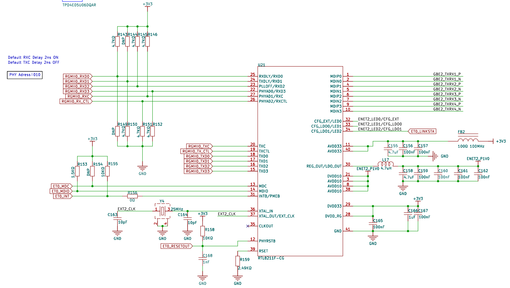
ETH1：
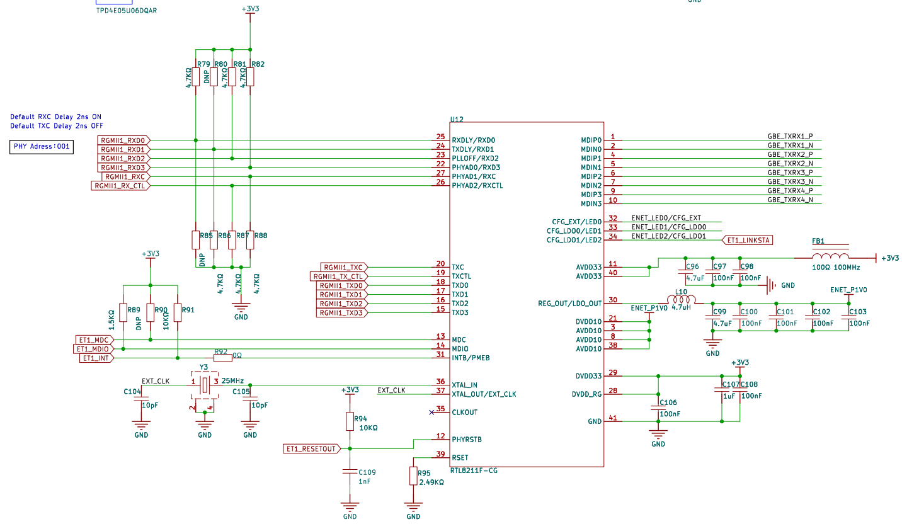
FSP 配置
新建 r_rmac stack：
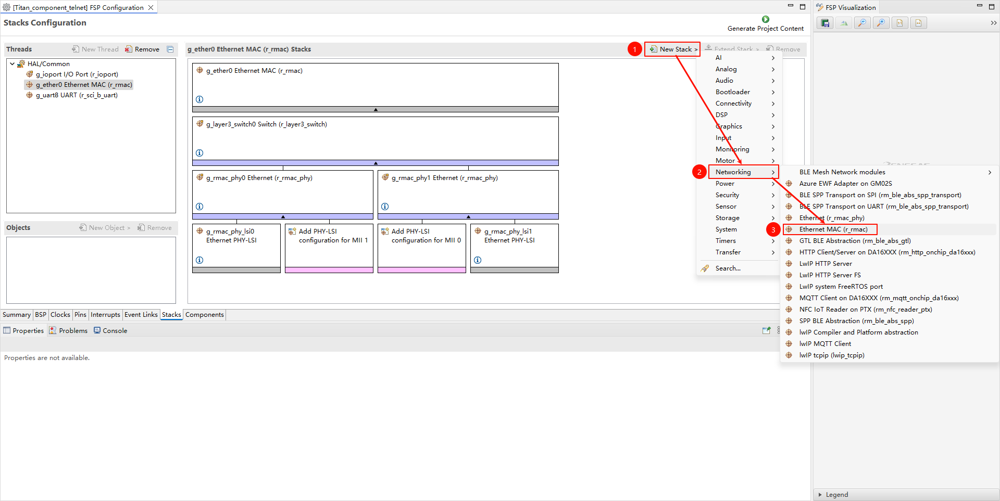
配置 r_mac stack：
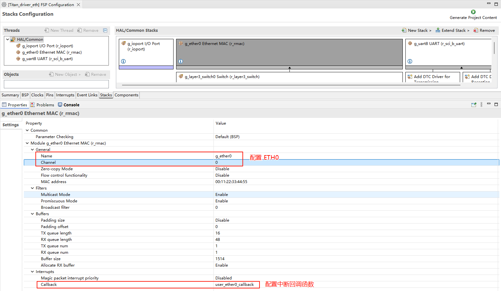
配置 r_layer3_switch：
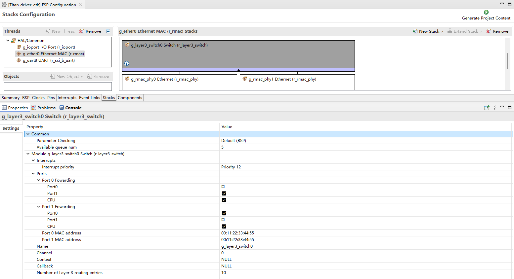
配置 r_rmac_phy：
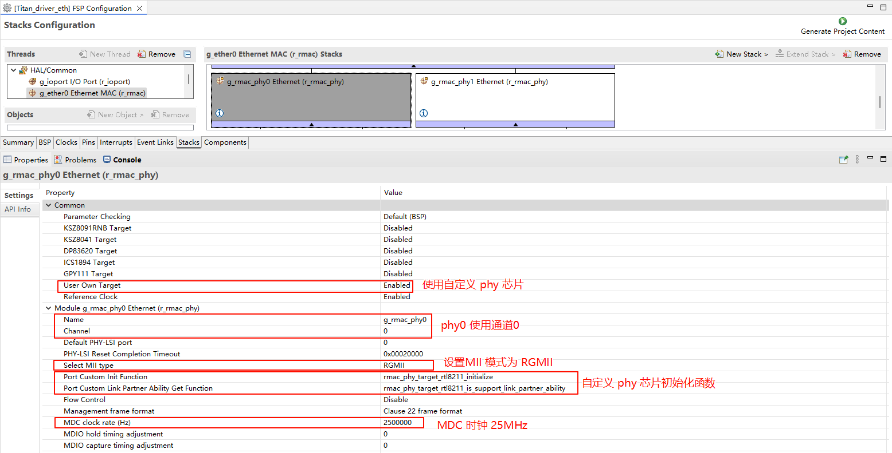
配置 g_rmac_phy_lsi0：
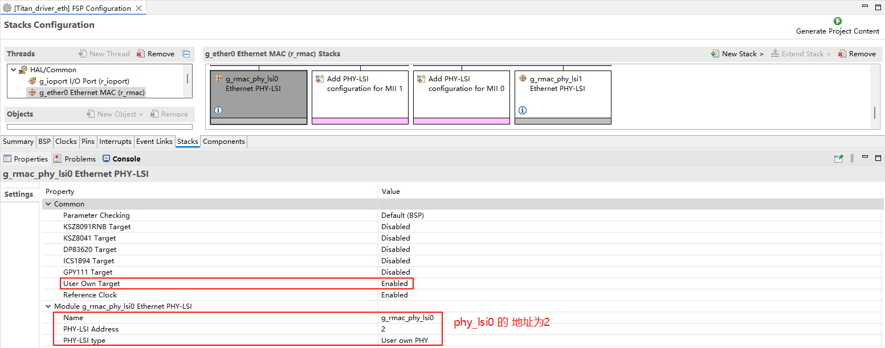
ETH0 引脚配置：
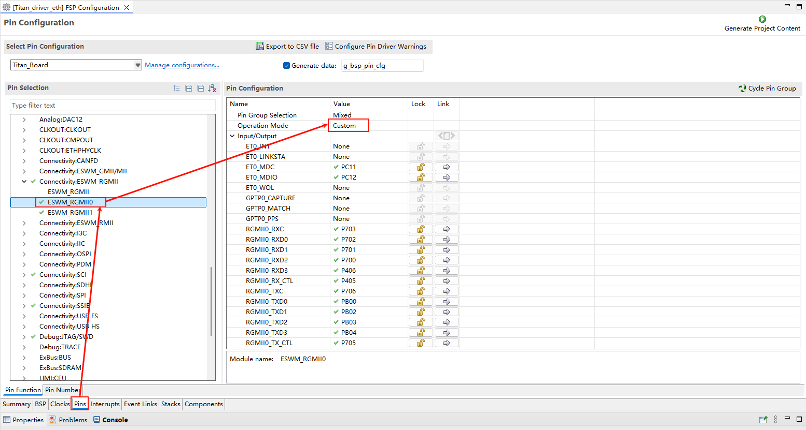
注意：ETH 相关的所有引脚需要将驱动能力改为 H。
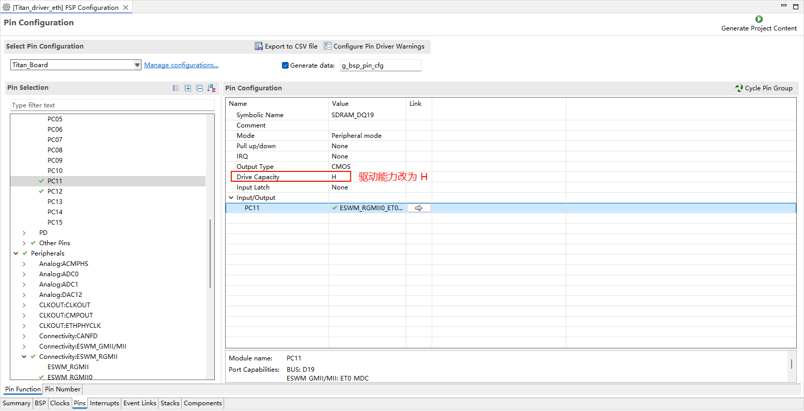
RT-Thread Settings 配置
在 RT-Thread Settings 中使能 Ethernet。
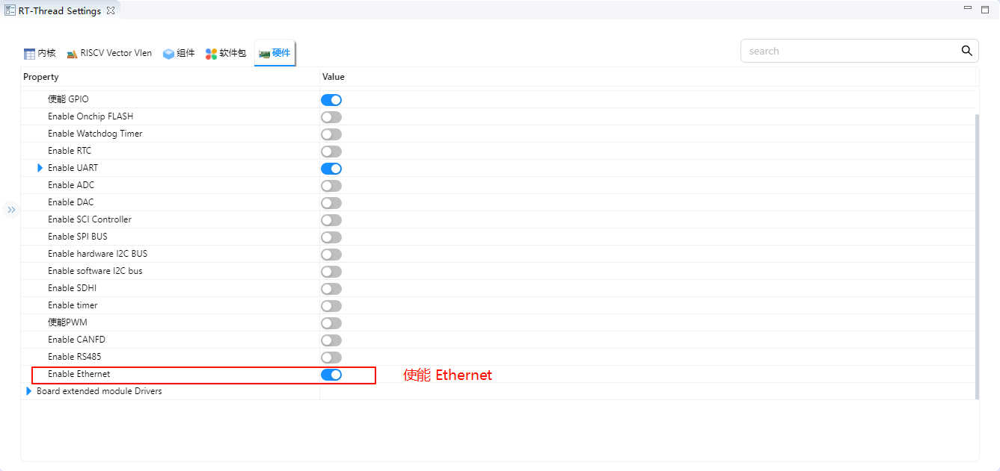
软件说明
以太网的 phy 芯片初始化函数在 ./src/hal_entry.c 中：
void rmac_phy_target_rtl8211_initialize (rmac_phy_instance_ctrl_t * phydev)
{
#define RTL_8211F_PAGE_SELECT 0x1F
#define RTL_8211F_EEELCR_ADDR 0x11
#define RTL_8211F_LED_PAGE 0xD04
#define RTL_8211F_LCR_ADDR 0x10
uint32_t val1, val2 = 0;
/* switch to led page */
R_RMAC_PHY_Write(phydev, RTL_8211F_PAGE_SELECT, RTL_8211F_LED_PAGE);
/* set led1(green) Link 10/100/1000M, and set led2(yellow) Link 10/100/1000M+Active */
R_RMAC_PHY_Read(phydev, RTL_8211F_LCR_ADDR, &val1);
val1 |= (1 << 5);
val1 |= (1 << 8);
val1 &= (~(1 << 9));
val1 |= (1 << 10);
val1 |= (1 << 11);
R_RMAC_PHY_Write(phydev, RTL_8211F_LCR_ADDR, val1);
/* set led1(green) EEE LED function disabled so it can keep on when linked */
R_RMAC_PHY_Read(phydev, RTL_8211F_EEELCR_ADDR, &val2);
val2 &= (~(1 << 2));
R_RMAC_PHY_Write(phydev, RTL_8211F_EEELCR_ADDR, val2);
/* switch back to page0 */
R_RMAC_PHY_Write(phydev, RTL_8211F_PAGE_SELECT, 0xa42);
}
bool rmac_phy_target_rtl8211_is_support_link_partner_ability (rmac_phy_instance_ctrl_t * p_instance_ctrl,
uint32_t line_speed_duplex)
{
FSP_PARAMETER_NOT_USED(p_instance_ctrl);
FSP_PARAMETER_NOT_USED(line_speed_duplex);
/* This PHY-LSI supports half and full duplex mode. */
return true;
}
编译&下载
RT-Thread Studio：在RT-Thread Studio 的包管理器中下载 Titan Board 资源包，然后创建新工程，执行编译。
编译完成后，将开发板的 USB-DBG 接口与 PC 机连接，然后将固件下载至开发板。
运行效果
将网线插入 ETH0 网口，按下复位按键重启开发板，等待 PHY0 link up 之后输入 ifconfig 可以查看开发板获取到的 IP 地址，然后输入 ping baidu.com 命令进行连通性测试。
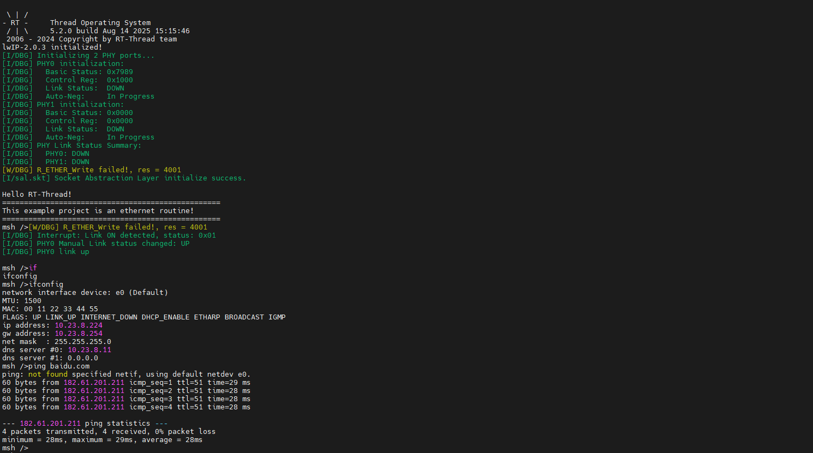